🗺️ UX Flow 아카이브
셀러 daily routine × 셀러 라이프스테이지 매트릭스 · 스테이지별 Service flow / User flow · 실화면(s01~s31)+8~9월 신규 Figma(s32~s39) 반영 · 사내 위키 리서치 근거 보강(ⓘ) · 기획자 공유용
⚑ 2P 이행·계약 3모델
도입 시 셀러가 택1 · 이후 관리 화면·LNB가 모델별로 갈림daily routine × 셀러 라이프스테이지 매트릭스
각 셀 = 닿는 화면·기능 + gap · 세로축 = 셀러 라이프스테이지(제품의 구매자 CRM 세그먼트와 다른 축)📎 아래 매트릭스는 daily routine이 있는 Net-new·New·Current만 다룸 — 가입심사·이탈·휴면은 운영 루프가 없어 라이프스테이지 축에만 표기(재진입 유도가 별도 과제). ⓘ 근거전시관리 리서치는 판매자를 G1(신규 세팅)·G2(반복 운영)·G3(최초 세팅 후 재사용 안 함=이탈)으로 구분. 제품의 판매자 상태(가입심사중/정상/휴면/이용정지/탈퇴)와 함께 라이프스테이지의 양끝(진입·이탈)을 이룬다.위키: [26Q2] 판매자 전시관리툴 리서치 · 문서 열기 ↗
📌 사내 위키(Confluence) 13개 문서로 gap 근거 보강(ⓘ 근거 클릭 시 인용·위키링크) · 전시관리 리서치 결과·N배송 데이터는 7/8·이후 갱신 예정(현재 일부 잠정).
Service Flow
화면·상태 시퀀스(제휴/직접/FBN)› SKU 생성·연결› SKU 정보 입력› 입고 신청› 입고 리포트› 판매 개시
(홈·알림)› 소개·비교› 매출·마진 비교ⓘ 근거N배송 랭킹모델(4/2) 적용 후 노출 +14.7%·클릭 +43%·구매 +25.8%·GMV +12.5%. 단 효과의 98%가 '배송점수(배송·구매 이력) 보유 상품'에서 발생 — 도입만으론 부족, 배송 이행으로 점수를 쌓아야 노출 효과가 온다(신규 상품은 초기 전환 낮음).위키: N배송 검색노출/GMV 증가 요인 분석 · 문서 열기 ↗› ◇ 모델 선택› 상품 2P전환
·SKU연결› 입고› 2P 판매
(매출·오늘주문·재고)› ⏰ 발송·입고 준비택배 픽업 前 최우선3P 주문확인·송장출력·포장·발송2P 재고확인·발송할 수량 확인·입고신청› 매출 진단
(이슈 원인)› 가격·광고
조정› 클레임 처리
(반품·교환·반출·사은품)› 정산·관리 ↻ 매일 반복
User Flow
과업별 수행 단계 — Service Flow가 스테이지 전체 여정이면, 이건 각 과업을 끝내는 세부 스텝(배송유형별)›마진 비교
(출고비계산기)›◇ 모델 선택⚠ 통합 마진계산기 없음 · GAP-004
직접배송
3P · 매일 최우선
2P · 발송과 병행
(대기→중→리포트→완료)›판매가능 전환
(정상/하자/리퍼)›◆ 검수확정›자동 환불›재고 처리⚠ GAP-006 검수확정 되돌릴 수 없음 · 미신청입고→긴급입고/회송
재고 회수
(정보→SKU→확인)›반출상세·반출증›정산⚠ GAP-006 정책·취소 시점
수기·사은품
(판매분석·검색인기도)›가격/광고/노출 조치⚠ GAP-001 기간 불일치 · GAP-002 진단 파편화
네이버 고유 강점
실제 화면 (8~9월 신규 · Figma)
각 과업의 실제 판매자센터 화면 — 이미지 클릭 시 Figma 원본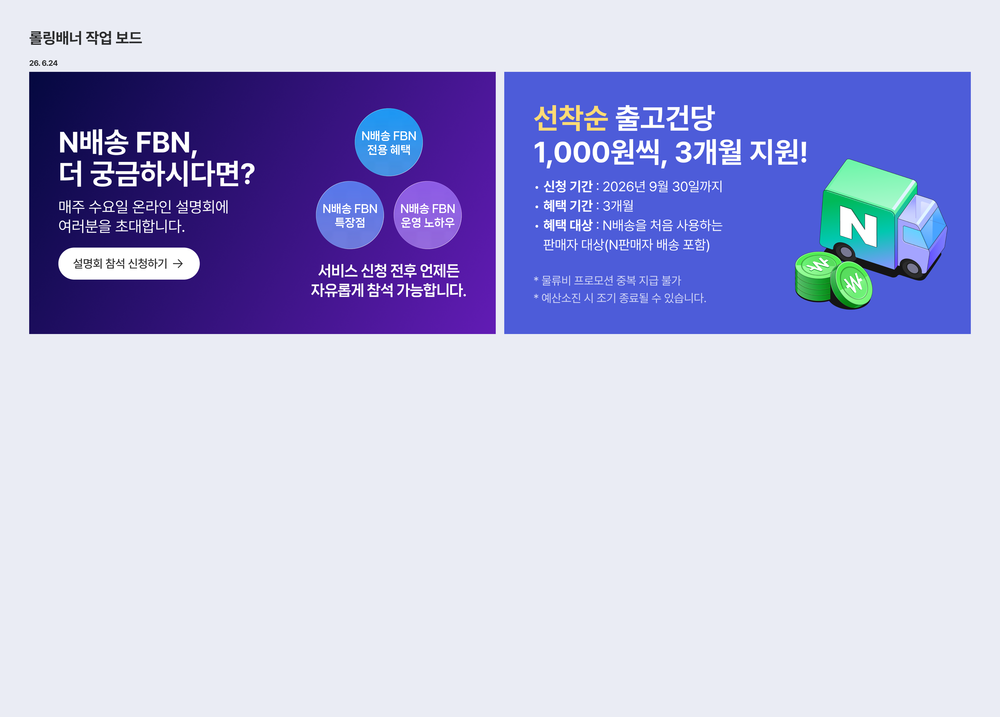
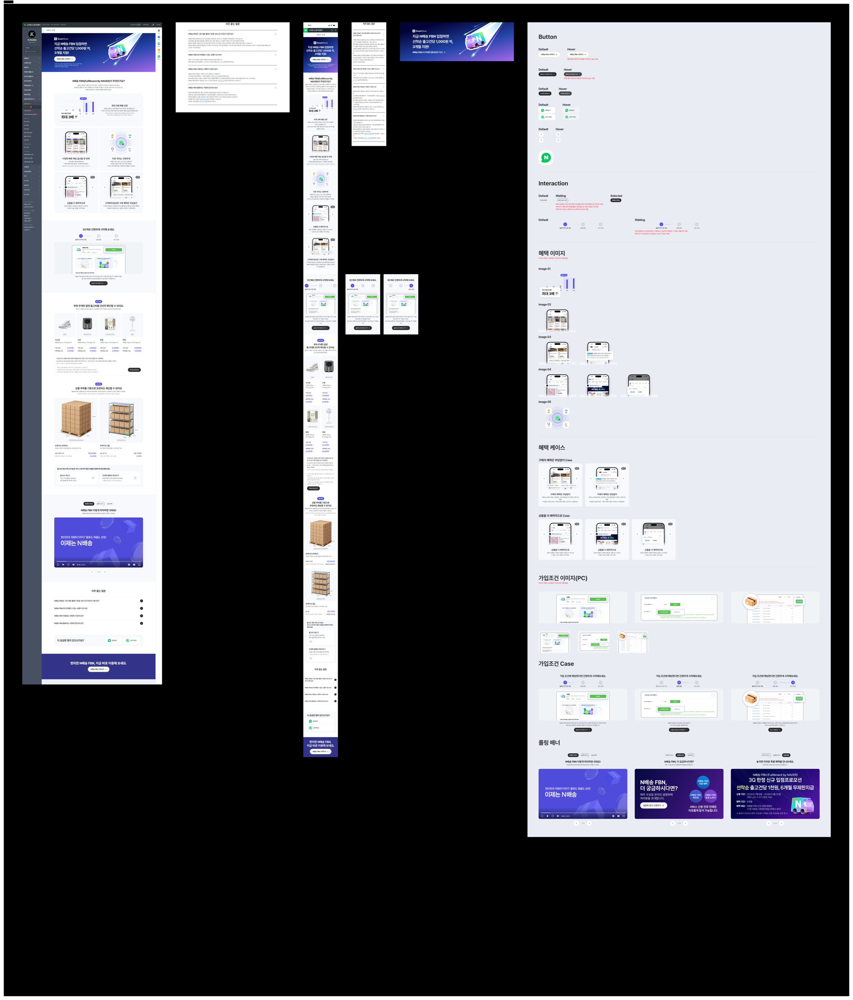
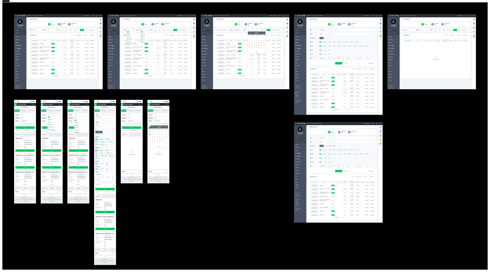
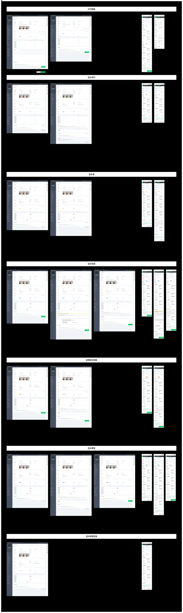
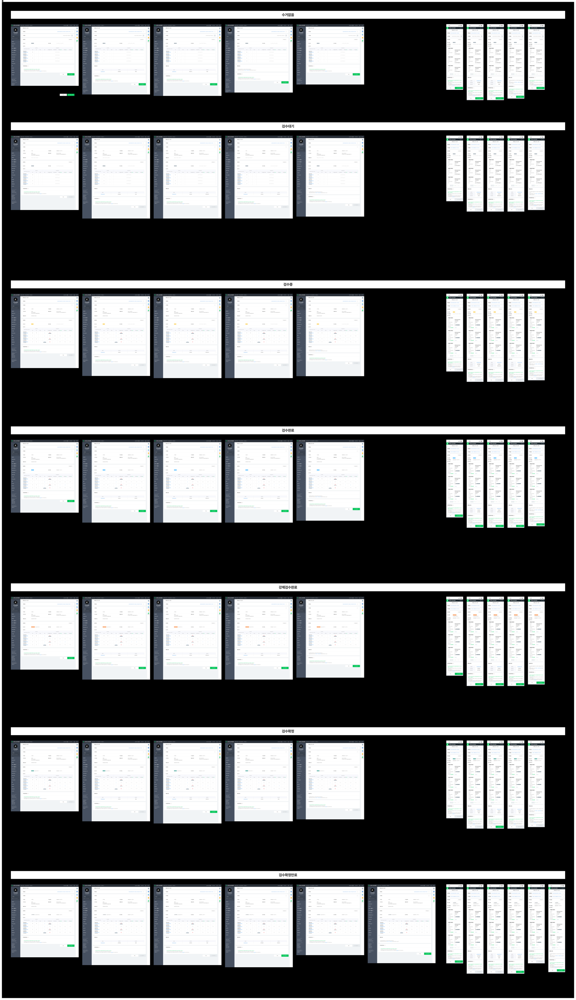
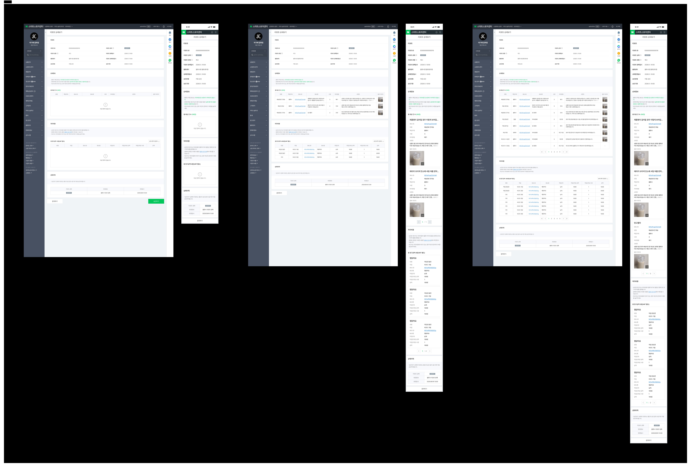
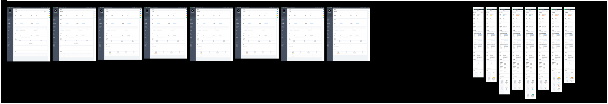
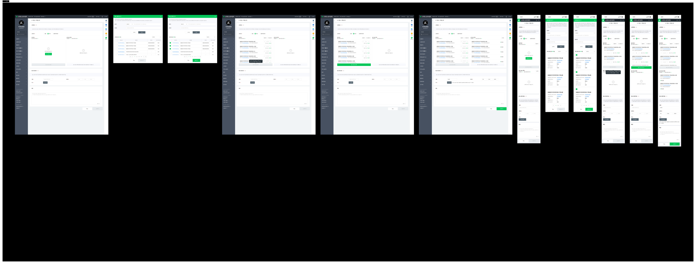
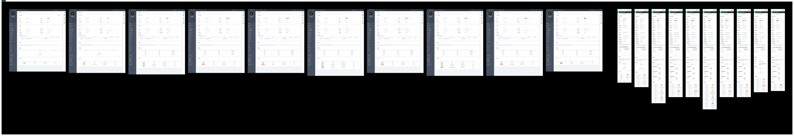
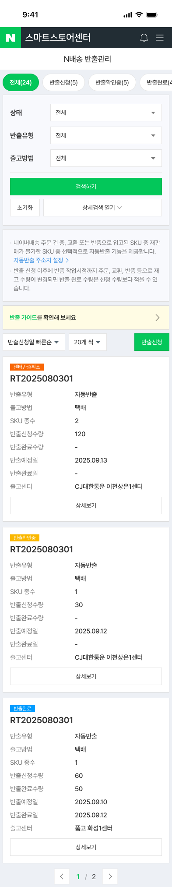
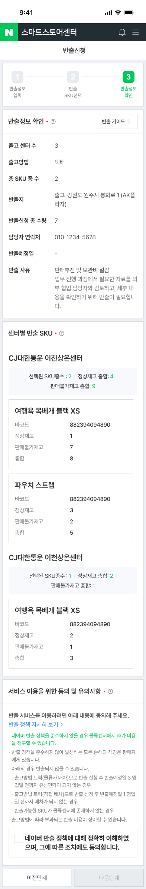
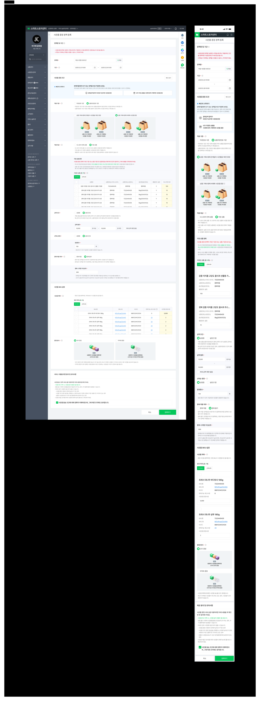
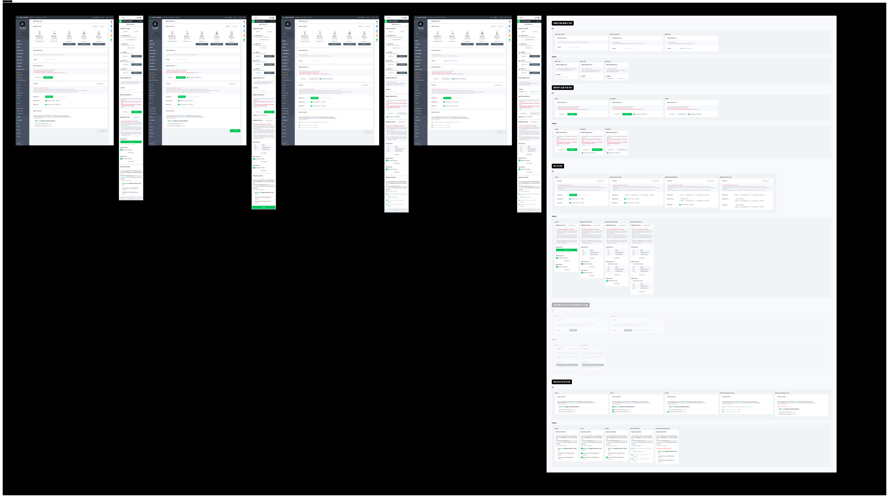
우선순위 Gap
추정 · ⚠️는 사용자 검증 필요| # | GAP | 한줄 | 심각도 | routine |
|---|---|---|---|---|
| 1 | GAP-006 되돌릴 수 없는 액션 다발ⓘ 근거사내 기획은 'One-step 검수확정(1클릭=검수확정+반품승인 동시, 3영업일 초과 시 자동만료·롤백불가)'을 핵심 UX 가치로 확정. 그런데 '판매자가 되돌릴 수 없음을 인지하는가'는 열린 리스크로만 남겨두고, 확정 버튼 경고 워딩은 UXW에 아직 없음 → 우리 GAP-006 검수(경고·확인 3단계)가 사내 공백을 메움.위키: N배송 직계약 반품 UX/UXR 검토 · 문서 열기 ↗ | 검수확정→자동환불/재출고(3영업일 자동만료), 반출지 주소동의·자동수거해제·사은품정책·SKU연동 등 '수정불가'가 곳곳에 | 高 | 5 조치 |
| 2 | GAP-005 연동종료·권한회수 강등 | 준수율 미달/연동종료 → 2P 상품 전부 일반배송 강등+태그 해제 | 高 | 6 관리 |
| 3 | GAP-003 SKU 온보딩 입력부담 | 입고 전 SKU마다 다수 필수입력+연동후 수정불가, 상품→SKU 전환 부담 | 高 | 5 도입 |
| 4 | GAP-004 2P 3모델 명칭 혼동 | 제휴 N배송·N판매자배송·N배송 FBN 구분 어려움(도입 오선택) | 中 | 1 인지 |
| 5 | GAP-001 홈→요약 기간 불일치ⓘ 근거요약→리포트 이동 시 상단에서 설정한 기간·카테고리 값이 기본값으로 초기화된다. '직접 선택' 시 비교기간 비활성화를 오류로 오인(가이드 문구 부재). YoY(13개월+) 선택 불가. → 조건 승계(기간·카테고리 동기화)가 필요.위키: [통계형 메뉴] 판매자 인터뷰(슈피겐) · 문서 열기 ↗ | 홈 일간→요약 30일, 이동 시 기간·카테고리 초기화 (인터뷰로 실증) | 中 | 1→2 |
| 6 | GAP-007 리포트 자동승인 | 입고·재고이슈 리포트 n일 후 자동승인, 이의 기회 놓침 | 中 | 6 관리 |
| 7 | GAP-002 진단/비용 파편화ⓘ 근거비용이 시점·메뉴별로 완전 분산: 입고=개별 리포트(2026.05 기준 94명/709건, 최다 92건을 판매자가 건별 직접 합산), 나머지=기타 물류비 리포트, 상계=정산관리, 분산청구=N페이. 금액은 익월 5일까지 못 봄. 계산기는 출고비만(보관비 미포함). → '한 판' 통합 비용/마진 뷰 필요.위키: 정산 관련 판매자 동선 및 커뮤니케이션 · 문서 열기 ↗ | 검색진단 2곳, 프로모션 진단/실행 분리, 물류비·재고 3P/2P 분리, 통합 마진 화면 없음 | 中~低 | 3 진단 |
✅ 검증 확정: GAP-006·005·004·002·001(사내 위키로 실증) · ⏸ 보류: GAP-003·007 · ⭐ GAP-006은 사내 기획이 리스크로만 남겨둔 지점을 우리 검수가 앞서 메움(경고·확인 3단계 역제안 가능)
관련 검수본: 입고리포트 자동승인 UXW 검수본 ›